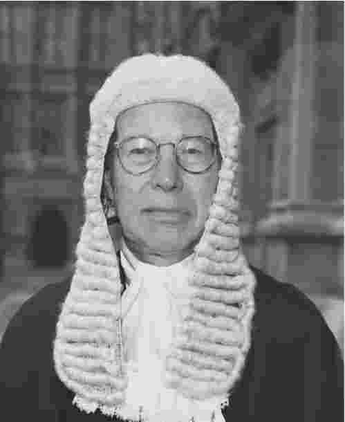

法哲学的基础在1970年代因美国法学家罗纳德·德沃金（1931——）的思想主张而动摇。德沃金在1969年继H.L.A.哈特之后出任牛津大学法学教授。法律实证主义的统治地位在接下来的三十年里受到了一种综合性的法律理论的全面冲击——特别在英国更是如此，这种理论虽然备受争议却又有高度的影响力。不管人们在何时就有争议的道德和政治问题展开辩论，德沃金的法律概念总是有相当强的权威，尤其在美国。无法想象对诸如美国最高法院的职能、堕胎问题或者自由和平等的一般问题等所进行的任何严肃分析能不考虑罗纳德·德沃金的观点。他那建设性的法律视角既是对法律概念的深刻分析，也是一种有很强说服力的诉求，要求支持法律的不断丰富完善。
德沃金复杂深奥的哲学体系由许多部分组成，其中包括这样一个论点，即法律对几乎所有问题都提供了解决方案。这与传统的，也即实证主义者的理解并不一致，后者认为当法官面对一个棘手的案件、处理这一案件又没有任何法条或者先前的判例可适用时，他只能运用自己的判断力，根据他认为似乎是正确的答案来裁定案件。德沃金对这个观点提出质疑，并表明法官并不是在造法，而是在解释 法律文件中已经包含的内容。

图8 罗纳德·德沃金将法律看成是一个解释过程，在这个过程中个人权利至高无上。
通过对这些文件的解释，法官就表达了其对法律体系所致力追求的价值的看法。
要理解德沃金的关键命题，即法律是“无漏洞的”体系，可考虑如下两种情形：
一个没有耐心的受益人意欲谋杀立遗嘱人。是否应当允许他有继承的权利？
一个国际象棋特级大师以频频微笑来分散对手的注意力。对手提出抗议。那么，朝别人微笑是否违反国际象棋的规则？
这两种情况都是“棘手案件”，因为在这两种情况下都没有一种确定的规则来解决。这就使得法律实证主义者非常头疼，因为正如上一章讨论的，法律实证主义通常主张法律包含的规则是由社会事实决定的。然而在上述例子中，规则用尽了，只能通过一种主观的从而是潜在武断的判断来解决问题：这对律师而言无异于噩梦。
然而，正如德沃金主张的那样，如果与规则相比法律存在更多这样的情况，我们就可以从法律本身找到答案。换句话说，诸如此类的棘手案件可以通过参考法律文件来作出裁决，无须超出法律范围而允许主观判断的介入。
上面提到的关于遗嘱的难题来自纽约州1899年里格斯诉 帕尔默案 的判决。遗嘱最终被有效执行，凶手如愿以偿。但是一个杀人犯能否继承遗产这一点并不确定：遗嘱继承规则并没有规定可适用的例外情形。杀人犯因而应有继承遗产的权利。然而，纽约州法庭却宣判遗嘱继承规则的适用要受制于“不应当有人能从自己的违法行为中获利”这一原则。因此杀人犯不能继承受害人的遗产。德沃金主张，这个判决表明除了规则外，法律还包括原则 。
在第二个难题中，德沃金认为需要裁判员来决定微笑是否违反了国际象棋的规则。规则并不会说话。因此裁判员必须考虑国际象棋作为一种智力技巧比赛的性质；这种技巧比赛是否包含使用心理威胁？换言之，他必须找到一种答案能最佳地“符合”和解释国际象棋的惯例。对于这个问题，将存在一个正确的答案。法官裁决一个棘手的案件时也同样如此。
本质使然，法律体系经常会产生诸如此类的有争议或者棘手的情况，在这些情况下，法官可能就需要考虑是否超越法律是什么的严格字面意义来确定法律应当是怎样的。换句话说，德沃金致力于研究一种解释程序，在这种程序中，类似于道德主张的论证起着非常重要的作用。法律的解释维度是德沃金理论的一个基本要素。他对法律实证主义的抨击是基于这样一种前提，即法律实证主义提出的法律与道德相分离是不可能的。
因而对德沃金而言，法律不仅包括哈特所主张的规则，而且还包括德沃金所称的非规则标准。当法庭必须裁决一个棘手的案子时，它就要利用这些（道德或者政治的）标准——原则和政策——来作出最后的判决。不存在任何承认规则——如哈特所述和上一章所讨论的——来区分法律和道德原则。关于法律是什么的决定不可避免地要依赖道德——政治上的考量。
德沃金对法律论证的构想经过两个发展阶段。首先，他在1970年代主张法律实证主义未能解释法律原则在确定法律是什么这一点上的重要性。到了1980年代，德沃金进一步形成了一个更为激进的论点，认为法律本质上是一种解释性的现象。该观点有两个主要的前提。第一个前提主张，要确定在某个特定的案件中法律的要求，这就包含了一种形式的解释性论证。例如，声称法律保护我的隐私权不受《每日传言》的侵扰就等于推断出需要某种解释。第二个前提是解释总是伴随着价值评判。如果这是正确的，就几乎敲响了法律实证主义者道德法律相分离命题的丧钟。
因此，法官就会利用原则来处理棘手案件，这些原则包括他自己对政治制度体系及其本人所处的社群决议之最佳解释的见解。他必须要问，“我的裁决能否成为证成整个政治法律体系的最佳道德理论的一部分？”每一个法律问题都只能有唯一的正确答案；法官有义务去找到这个答案，当他的答案最符合其所处社会的制度和宪政历史时，在这种意义上，这个答案就是“正确”的，就是在道德上能得到证成的。所以法律论证和分析就是“解释性的”，因为法律论证和分析试图给法律实践赋予一种最佳的道德意义。
德沃金对法律实证主义的批判，其关键根据在于他所关注的法律应当“认真对待权利”。权利优先于诸如社群福利等其他考量。正如哈特所称，如果一个棘手案件的最终结果取决于法官的个人看法、直觉或者强判断力的运用，那么这将严重危及个人权利。我的权利就会仅仅从属于社群的利益。相反，德沃金主张，我的权利应被认可为法律的一部分 。因此他的理论为捍卫个人权利和自由提供了比法律实证主义所能提供的更强的力量。
德沃金在他那本著名的巨著《法律帝国》中发起了对“传统主义”和实用主义大规模的批判。前者主张法律是社会传统的一种功能，因此法律是指一种法定的传统。换句话说，传统主义声称法律不过是存在于某些传统（如高级法院的判决对下级法院有约束力）中。传统主义还把法律看成是不完善的：法律存在着“漏洞”，因此法官就用其个人偏好填补这些漏洞。换句话说，法官运用了一种“强判断力”。
德沃金认为，传统主义对法律的论述既未能提供一个令人信服的对立法程序的说明，也未能足够有力地维护个人权利。在德沃金“作为整体的法律”的视角中（见下文），法官必须把自己想象成是普通法链条中的一个创造者，而非像传统主义者声称的那样是在表达他自己的道德或者政治信念，甚至也不是在表达那些他认为立法机构或大多选民会赞成的信念。正如德沃金所说：
按照德沃金的说法，实用主义者对过去的政治决议证成国家的强制力这一观点采取了一种怀疑的态度。相反，他们认为这种强制力的正当性在于法官行使该强制力的公正性或者效率或者其他美德。这种观点未能认真地对待权利，因为它只是工具化地对待权利——权利本身没有任何独立的存在价值：权利仅仅是一种让生活变得更好的手段而已。实用主义者相信这样一种主张，即法官确实在作——而且应当作——任何对他们而言似乎是最有利于社群未来的裁决，他们并不认为仅仅为保持一致而与过去保持一致有价值。
只有德沃金所说的“作为整体的法律”（见下文）为国家行使暴力提供了一个可接受的正当理由。他告诉我们，法律帝国“并不是由领土或权力或程序，而是由态度界定的”。换句话说，法律是一个解释性的概念，它在最宽泛的意义上向政治表达主张。它采取一种建设性的态度，因为它试图改善我们的生活和社群。
德沃金在对司法功能的论述中要求法官把法律看成一张无缝隙的网，除了法律以外不会再有法律存在。而且，与法律实证主义者的观点相反，法律中也不存在任何的漏洞。法律和道德是紧密相连，不可分开的。因此不可能存在着上一章所述的所谓确认法律的承认规则。哈特认为法律是主要规则和次要规则的联合，这个观点也并未提供一个严密的模式，因为它遗漏或者至少疏忽了原则和政策的重要性。
德沃金认为，虽然规则“要么无所不能，要么一无是处”，原则和政策却有其“重要性或重要价值”。换句话说，如果一个规则适用并且有效，法官就必须根据这个规则的指示来作出裁决。另一方面，原则提供了以一种特殊方式来裁决案子的理由，但并不是决定性的理由：法官必须根据体系中的其他原则来进行权衡。
原则与政策的不同点在于前者“作为一种标准被遵守的原因在于正义或公平或者道德的其他一些维度，而非因为它会促进或确保经济、政治或社会状况”。“政策”则是“那样一种标准，它确立起需要达到的目标，这种目标通常是改善社群的经济、政治或社会面貌”。
原则描述的是权利，政策描述的是目标。但是权利是“王牌”。与社群的目标相比，权利有一种“门槛的重要性”。权利不应受到与之相冲突的社群目标的压制。德沃金认为，每一个民事案件都会产生这样一个问题：“原告是否有胜诉权？”社群的利益不应当掺杂其中。因而，民事案件是按照原则来裁决的，并且也应当如此。即使一个法官似乎在提出政策作为论据，我们也应当认为他是在诉诸原则，因为他实际上在决定着社群成员的个人权利。因而，假如一个法官诉诸公共安全之类的理由来证成某种抽象权利，这应当被理解成是在诉诸一些人相冲突的权利，这些人的安全感会因为这种抽象权利的具体化而丧失。
在一个“棘手的案件”中——如里格斯诉帕尔默案中的行凶受益人（见前文）——没有任何规则可以直接适用，法官必须适用规则以外的标准。理想的法官——被德沃金称为赫拉克勒斯——必须“构建一个由抽象和具体的原则构成的系统，从而为所有普通法判例提供一个连贯有序的正当理由，并且，为使这些判例能得到原则的证成，也需要创设一些宪法原则和法定原则”。当法律文件允许一种以上的连贯一致的解释时，赫拉克勒斯将按照最符合其社群的“制度历史”的法律和正义理论来裁决。
如果赫拉克勒斯发现一个先前的裁决不“符合”他自己对法律的解释怎么办呢？假如这个判例是由一个高级别的法院作出的，而赫拉克勒斯无权否决这个判例，结果又会如何呢？德沃金称，赫拉克勒斯可以将这个判例看成是一个“内含的错误”，然后把它限制为只具有“制定力”。这意味着它对将来案件的影响只能局限于其精确的字面措辞。然而，如果一个在先判决既没有被否决也不被认为是一个内含的错误，它就会产生德沃金所说的“重力”，即它所施加的影响将不限于其真实措辞：它将诉诸类似案件相似处理的公平原则。
德沃金声称，关于法律效力标准的论据严重削弱了传统主义（或法律实证主义）。正如我们在上一章中看到的，法律实证主义者通常满足于这样一个事实，即承认规则规定了X是法律。这样，一条规则的由来和发展过程就决定了它的效力。但德沃金却认为，法律效力的基础不能仅由承认规则中所蕴涵的标准来决定。这就构成了德沃金所说的法律实证主义的“语义学之刺”：法律实证主义者关于法律的争论实际上是针对“法律”这个词的内涵的语义争执。
然而，德沃金认为法律效力的概念并不仅限于按照承认规则所进行的法令公布。语义学理论对一种主张表示了质疑，这种主张认为存在着一种普遍标准，它能穷尽准确应用法律概念的所有条件。德沃金认为，这些理论错误地假定，除非存在着决定我们的诉求何时有效的标准，否则不可能出现有意义的分歧，即使我们无法准确说明上述标准的内容。
德沃金的权利论建立在一种自由主义理论之上，这种理论源自这样一种观点，即“政府必须平等待民”。政府不能要求任何公民作出某种牺牲或对他们施加某种限制，这种牺牲或者限制是公民不可能接受的，除非他们放弃平等价值观。德沃金对政治道德的分析包含三个部分：“正义”“公平”和“程序性正当程序”。“正义”包括理想的立法者认可的个人权利和集体目标两方面，这样的立法者致力于以同等的关切和尊重来对待公民。“公平”是指在作出影响公民的决定时保证所有公民发挥大致平等作用的程序。“程序性正当程序”涉及决定公民是否违反法律时的正确程序。
以政治自由主义为基础，德沃金多次抨击诸如以刑法强制执行私德的做法、财富是一种价值的观念以及声称“积极歧视”不公平的说法。
德沃金的目的是要“阐释一种法律的自由理论并为之辩护”。这也是他抨击法律实证主义、传统主义和实用主义的主要原因，因为所有这些理论都未能提供对个人权利最充分的辩护。只有“作为整体的法律”（见下文）才提供了一种适当的辩护，从而能与工具主义就个人权利和一般自由提出的主张相抗衡。德沃金法学理论中的一个关键的、也是有争议的组成部分是它所主张的法律与文学解释的密切关系。德沃金认为，当我们试图解读一件艺术品时，我们努力按照某种特定方式来理解它。我们设法精确地描述著作、电影、诗歌或者图画。在力所能及的范围内，我们想要以一种建设性 的方式来确定作者的意图。为什么亨利·詹姆斯要选择描写这些特殊的人物？他的目的是什么？为了回答这类问题，我们以自己特有的方式努力去给出一个对小说最佳的说明。
德沃金认为，法律像小说或者戏剧一样，也需要解释。法官就像对一个不断发展的故事进行解释的人。他们承认自己所负的保持而非抛弃其司法传统的职责。他们因此提出了对自身在这种传统内的职责所作的最具建设性的解释理论，他们这样做是出于自己的信仰和直觉。因此我们应当把法官想象成是参加连环小说创作的作者，每个人都要为小说写一章新的内容，而下一个作者则接着这一章开始写。每个小说家都试图用前面的章节构造一部独立的小说；他竭力去书写自己的那一章，这样最后的结果会连贯一致。为实现这一点，就要求他对故事的进展程度有洞见：小说的人物、情节、主题、流派和总体叙述目的。他会设法在持续的创作中找到作品的意义，并找到一个能够证成的最佳解释。
作为一个对法律的前述章节作建设性解释的人，赫拉克勒斯这个超人法官将赞成对法律的概念所作的最佳说明。在德沃金看来，法律概念的最佳说明存在于他所称的“作为整体的法律”。这迫使赫拉克勒斯去探究他对法律的解释是否能构成一个连贯一致的理论的一部分，这个理论能证明整个法律体系的正当性。什么是“整体”？德沃金对其重要成分作出了如下描述：
强制力的集体运用，只有在一个社会承认整体性是一种政治美德时才能得到辩护。这使其得以证成行使暴力垄断权的道德权威。整体性同样是防御偏私、欺骗和腐败的安全措施。它确保法律被理解为属于一种原则问题——平等对待社群的所有成员。简而言之，它是构成自由社会本质的价值和法治（或像德沃金现在所说的，“合法性”）的混合体。
我们为什么重视法律？我们为什么敬重那些坚持法律的社会，而且更重要的是我们为什么称赞他们对那些表现法治国家特点的政治美德的遵守？德沃金在其最新一本著作中提到，我们之所以这样做是因为虽然一个有效率的政府值得称赞，但还有一种更重要的价值是由合法性来实现的。对法律的道德合理性的关注是德沃金法哲学的主要内容。在很大程度上，这建立在一个相当不严密的“社群”或“社团”概念的基础之上。
一个认可整体性的政治社会变成社群的一种特殊形式，因为它主张使用强制力的道德权威。整体性要求公民之间实现一种互惠，并要求承认他们之间“连带义务”的重要性。如果一个社群堪称真正的而非仅仅是一个“刚够格”的社群，它的社会实践就会产生真实的义务。这种情况发生于该社群成员认为他们的义务是特殊的（即适用于特定的群体）、个人的（即在成员间流转），并且建立在对所有人的福利予以同等关注的基础之上。当这四个条件得到满足时，“刚够格”社群的成员就获得了一种真正的社群义务。
德沃金政治合法性的思想建构在关于一个真正社群的概念之上。他认为，政治义务是连带义务的一种例证。要产生政治义务，一个社群必须是真正的社群。只有支持整体性观念的社群才能成为一个真实的、道德上合理的连带社群，因为其选择涉及到义务而非赤裸裸的暴力。
司法功能与文艺评论程序的比较着重强调了法律的积极一面以及法官在其中的重要作用，而德沃金的作为原则联合体的政治社群是一个有着巨大吸引力的概念。这种情境很少有社会能实现，但人们希望很多社会能追求这样一个目标。